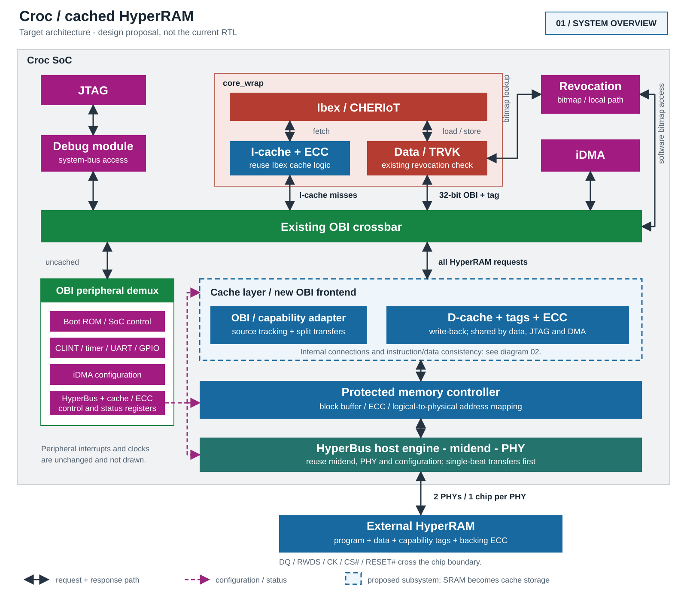
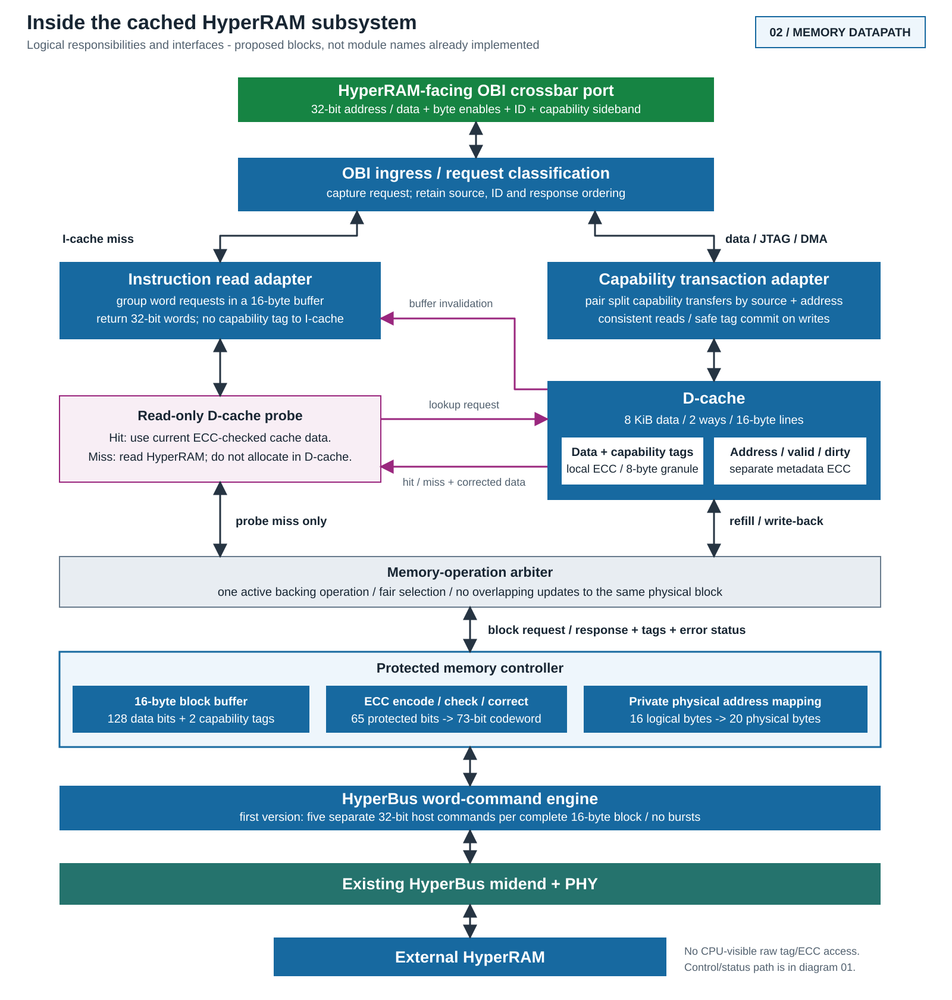

Overview. Double-headed links represent requests and their matching responses, not two physical buses. Dashed magenta links are control/status. Peripheral interrupts, clock/reset distribution and user-domain details are omitted.

Memory detail. I-cache hits stay inside Ibex. D-cache hits stay in the cache. Only probe misses, refills, write-backs and initialization reach HyperRAM. The proposed probe must wait for conflicting accepted writes.
Architecture contract
Design proposal / 2 November 2026. These diagrams describe the intended next architecture, not implemented or verified RTL. Initial sizes and the physical record layout are candidates for implementation and measurement, not established optima.
Starting configuration
| Property | I-cache | D-cache |
|---|---|---|
| Usable data capacity | 4 KiB | 8 KiB |
| Line length | 16 bytes | 16 bytes |
| Associativity | 2 ways | 2 ways |
| Write policy | Read-only | Write-back / write-allocate |
| Capability tags | Not needed for fetch | 1 per 8 data bytes |
| Local memory protection | Existing Ibex ECC | Data + tags; metadata separately |
The existing Ibex configuration has 8-byte lines; 16-byte lines are a proposed change. Its cache sizes currently live in ibex_pkg.sv. A central build configuration must propagate supported geometries consistently before parameter sweeps.
Backing storage with ECC from the start
Each aligned 8-byte region has 64 data bits + 1 capability tag. An extended Hamming SECDED code adds 8 check bits, producing a 73-bit codeword. The tag participates in error correction; it is not an unprotected extra bit.
One physical record represents 16 logical bytes in 20 physical bytes. Metadata contains two tags, sixteen ECC bits and fourteen padding bits. All five words are 32-bit aligned. Relative physical record address: 20 * (logical_offset / 16), with the integer record index.
The usable address range must account for the 25% storage overhead. Raw metadata addresses are private to the controller. Changing cache sizes must not change this backing format.
First transport implementation
A full-record read or write uses five separate, single-beat 32-bit HyperBus host commands. Retain the existing configuration frontend, midend and PHY. Replace the current OBI/tag-SRAM transaction FSM with the new subsystem; reuse its host-handshake logic where appropriate. Later, transfer adjacent physical words with bursts without changing the CPU-visible interface.
Required correctness rules
- Split capabilities: retain requester identity and address while assembling paired transfers. Do not publish tag 1 for a partially updated capability. The first word must be acknowledged without waiting for a second word that the core may issue only after that acknowledgement. Define cancellation, conflicting-access and eviction rules before implementation.
- Consistent reads: both returned halves and their tags must describe one consistent capability. Scalar writes to any byte clear the shared tag; update local ECC from corrected data after applying byte enables.
- Local and backing ECC: checking only HyperRAM is insufficient. Check cache data, capability tags and cache address/valid/dirty metadata. Correct single-bit errors and repair storage. Ibex's I-cache instead invalidates/refetches on a local ECC error. Initially treat uncorrectable D-cache/metadata errors and uncertain write-backs as fatal; never discard dirty state silently.
- Instruction/data consistency: instruction misses probe the D-cache without allocating an additional D-cache line. A hit supplies ECC-checked current data, including dirty data. Writes also invalidate matching instruction-adapter buffer contents. Combined with the existing I-cache invalidation on
FENCE.I, this avoids fetching stale data after code changes. - All masters: JTAG and DMA use the same data-cache path. Their ordinary writes clear capability tags. No uncoordinated direct-HyperRAM bypass. Debug/DMA code modifications also need instruction-cache synchronization; writes during a probe or pending capability pair must be ordered.
- Boot and maintenance: configure HyperBus, initialize complete valid data/tag/ECC records, and only then perform ordinary reads or read-modify-writes. The loader must not read uninitialized ECC records to merge its first partial writes. Expose protected initialization, cache clean/drain and ECC diagnostics; define restart after a partial backing write.
- Revocation: keep the current bitmap path outside the cache subsystem. The core's existing revocation filter still applies to capability loads on cache hits. This proposal does not yet add ECC to the bitmap or protect OBI address/control wires.
Area, performance and verification
Map both cache data arrays and their metadata to suitable SRAM macros; usable capacity excludes ECC, address metadata and macro padding. Enabling Ibex's generic cache RAM model alone is not an ASIC macro integration.
Start with one active backing operation and a block buffer. Measure hit/miss counts, CPU stalls, physical bytes, write-backs, HyperBus commands and ECC events. Larger lines do not amortize HyperBus command latency until bursts are implemented. Inject single- and double-bit faults in data, capability tags, ECC and cache metadata.
Implementation order: freeze interfaces and layout; verify the uncached protected-memory controller; integrate the I-cache; integrate and verify the D-cache and consistency paths; then sweep geometry and add bursts.